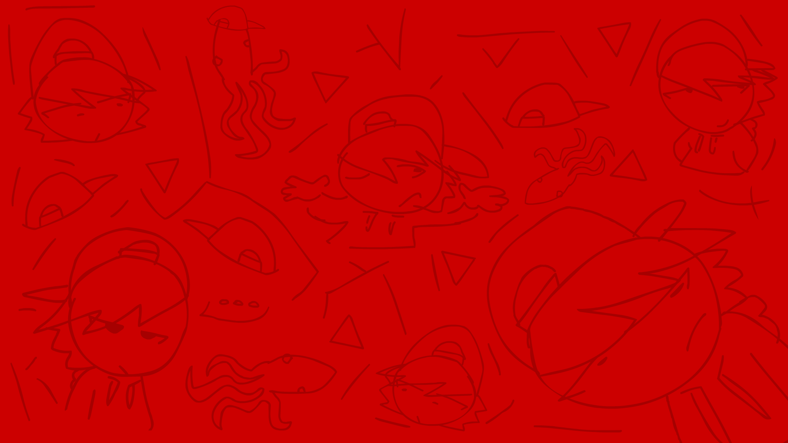

NAME: Squiddo
AGE: 15
BIRTHDAY: 02.01
DESCRIPTION: Truthful and Honest, the oldest of the group. Despite his anger issues, he shows deep care towards his friends and sister Doggie.
VOICE ACTOR: Disturdy